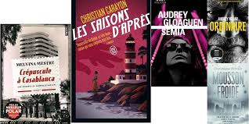
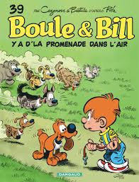
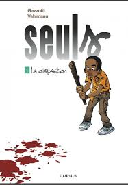

quels sont les differents type de livres qu'on peut trouver?
il existe plusieurs types de livres , chacun offrant une expérience de lecture unique.
voici quelques categories populaires:
Romans:
des oeuvres de fiction qui racontent des histoires imaginaires.ils peuvent
être de différents genres, comme les romans d'amour , les romans policier, les sciences-fiction
voici quelques roman

lien pour trouver des romans
https://www.google.com/url?sa=t&rct=j&q=&esrc=s&source=web&cd=&cad=rja&uact=8&ved=2ahUKEwjhoM3S9pOKAxUEVkEAHargJwoQFnoECCMQAQ&url=https%3A%2F%2Fwww.monbestseller.com%2Fauteur%2Fliste%2Froman&usg=AOvVaw3I6Um0DxVd0iJ9OS4b-H6w&opi=89978449
Essais:
ce sont des textes non fictionnels qui explorent des idées, des opinions ou des
reflexions sur divers sujets comme la philisophie, la politique, etc
Poésie:
ce sont des oeuvres qui utilisent le langage de manière artistique pour exprimer
des émotions , des idées, des images et cela avec des rimes
voici quelques lien pour retrouver et lire des poesies
https://www.google.com/search?client=opera&hs=cNi&sca_esv=5e149bf8f06c5a40&sxsrf=ADLYWILOFVcIT8xgtH0LvU8qY94NWnahEA:1733512328360&q=poesies&udm=14&fbs=AEQNm0CbCVgAZ5mWEJDg6aoPVcBgTlosgQSuzBMlnAdio07UCCJug3WzoI_0_7bcYmDUufyiZo0OmOGEiyRGYAdeCNb_RcD6oVCDhyr3UubmB55g-XHx6STScAi10H0UBt_esBjGhtTzS--OdPZboIBO9pOhirZ6mN4suoHRD3aGHAOemJJEQN3BxdDhyHhP71XAYwqqdSTE&sa=X&ved=2ahUKEwjFwa7U7JOKAxULTEEAHe_vDqsQs6gLegQIERAB&biw=704&bih=257&dpr=1
bandes dessinées:
ce sont des histoires racontées a travers des illustrations et des texte
voici quelques bandes dessinées


liens pour retrouver des bandes dessinées
https://www.google.com/url?sa=t&rct=j&q=&esrc=s&source=web&cd=&ved=2ahUKEwjbmPDo9ZOKAxURaEEAHXXULy8QFnoECCEQAQ&url=https%3A%2F%2Fwww.fnac.com%2Fn354490%2FPetit-prix-et-bons-plans-ebooks%2FEbooks-gratuits-par-genre%2FHumour-et-BD-Ebook-gratuit&usg=AOvVaw19kZKI5FE1eNWVYvw3vrJy&opi=89978449